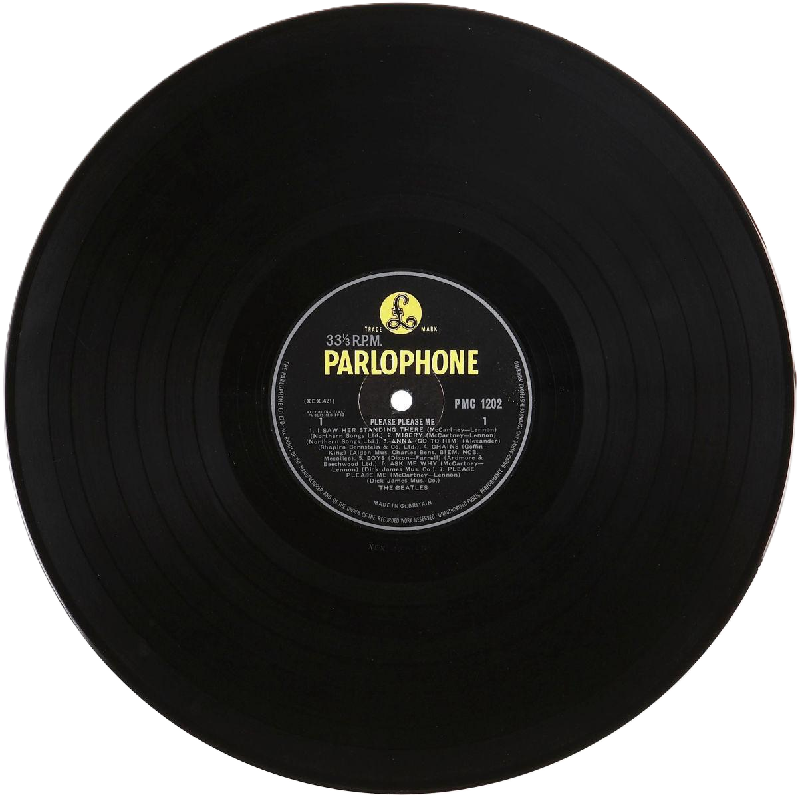
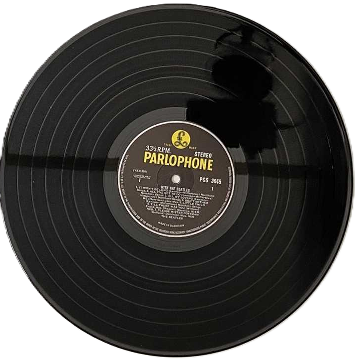
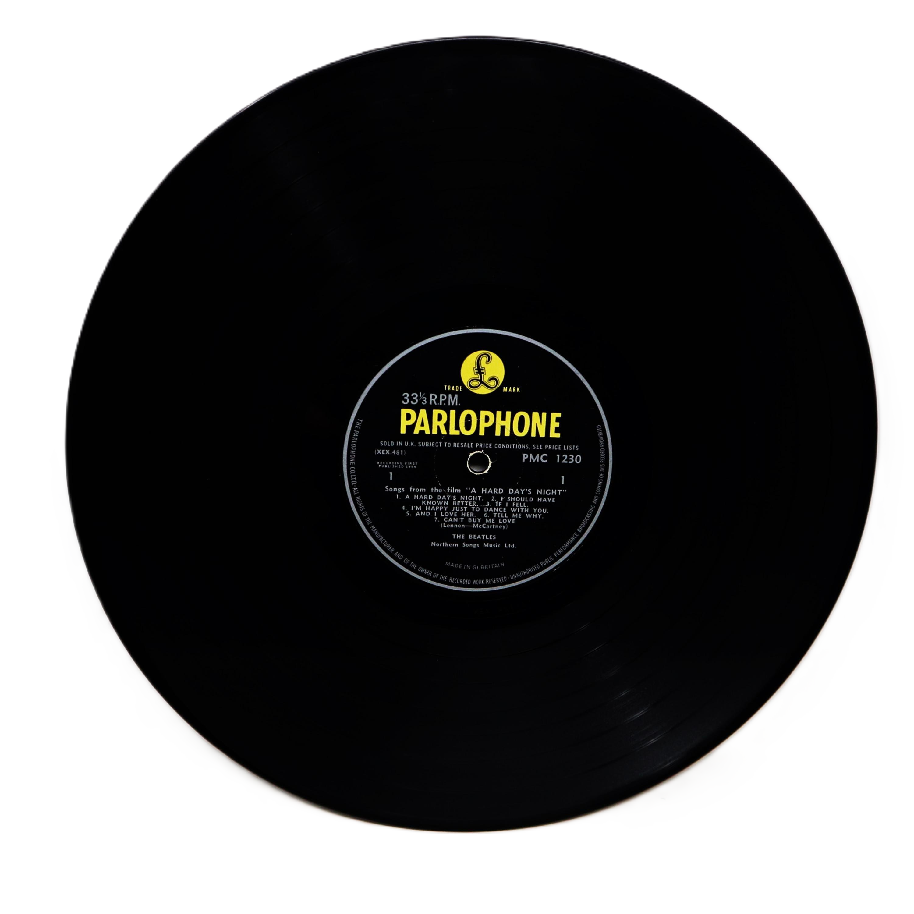

Beatlemania Era
1963-1965
Fase marcada pela explosão mundial da banda, com ternos combinando, gritos ensurdecedores das fãs e turnês incessantes. O som unia a energia do rock and roll americano dos anos 1950 (Chuck Berry, Little Richard) com harmonias vocais contagiantes e canções pop diretas sobre romances juvenis.


Please Me (1963)
Lançado em 22 de março de 1963, foi o albúm de estreia da banda e marcou a transição da banda de um fenômeno local de Liverpool para um sucesso nacional no Reino Unido. O disco chegou ao 1º lugar nas paradas britânicas, onde permaneceu por 30 semanas, algo extraordinário para um álbum de estreia.
As 14 faixas apresentavam a mistura de rock and roll, skiffle, Merseybeat e pop que caracterizava o início da banda.
Curiosidade
Quase todo o álbum foi gravado em uma única sessão intensa de pouco mais de 12 horas no Abbey Road Studios, em 11 de fevereiro de 1963. O produtor George Martin decidiu capturar a energia crua da banda ao vivo, já que eles tocavam constantemente em clubes como o Cavern Club.
Destaques:
- Please Please Me
- I Saw Her Standing There


With the Beatles (1963)
Lançado em 22 de Novembro, consolidou a parceria de composição entre John Lennon e Paul McCartney, além de marcar a primeira composição solo de George Harrison lançada pela banda, "Don't Bother Me". O álbum mistura faixas originais enérgicas com covers de R&B, Soul e Motown (como músicas de Chuck Berry, Smokey Robinson e The Marvelettes).
Curiosidade
A fotografia em preto e branco com iluminação half-shadow (meia-sombra) foi tirada pelo fotógrafo de moda Robert Freeman. A estética contrastante rompeu com os padrões coloridos e sorridentes das capas de discos pop da época e tornou-se uma das imagens mais imitadas da história da música.
Destaques:
- All My Loving
- Please Mister Postman


Hard Days Night (1964)
Divulgado em 10 de julho de 1964, fou um verdadeiro marco na discografia do grupo, pois foi o primeiro a conter exclusivamente composições próprias. O disco funcionou como a trilha sonora oficial do primeiro filme dos Beatles, estrelado por eles mesmos e dirigido por Richard Lester. O sucesso cinematográfico e o álbum consolidaram a Beatlemania em escala global.
Curiosidade
A faixa de abertura começa com um acorde de guitarra inconfundível, denso e ressonante tocado por George Harrison em sua guitarra Rickenbacker de 12 cordas, acompanhado pelo baixo de Paul McCartney e pela bateria de Ringo. Esse acorde tornou-se um dos sons mais estudados e icônicos da história do rock.
Destaques:
- And I love her
- Can't Buy Me Love